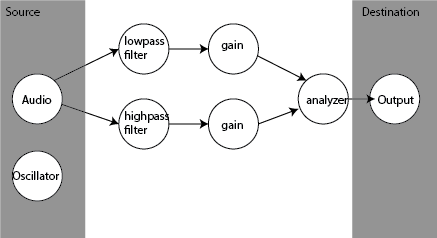

Next to all the cool visual stuff you can do in your browser, the Audio API gives you the means to go all out with audio. Not just play, pause, etc. but real audio processing. You can generate sounds (waveforms), you can filter the audio and analyze it.
What'cha gonna do with it then?
LowPass filter
Frequency () Gain ()HighPass filter
Frequency () Gain ()Source
How does it work?
The Audio API is a really complex beast to tame. It basically works by building a network of processingmodules with each it's own function. Every module has one (or sometimes more) inputs and one or more outputs. The diagram below shows what we did above.
Once you grasp the basics it's actually pretty nice to work with such a powerfull API.
Useful?
Very much so, especially in game design but also in audio content creation. We could for instance build whole DJ-machinery within the browser. Other stuff you could do with it:
- Build a cloud based DJ-mix panel which you could access anywhere
- Generate your game sound on demand
- Build a whole sound-studio in your browser
- Build your own synthesizer
Great, but can I use it today?
There is one snag here: it's only supported on Chrome and Safari (and Safari Mobile). The good news however is that Mozilla had an Audio API before it became official and they have said they're working on implementing the new API.
Show me the source!
Feel free to look around the differente source files we used for this example.